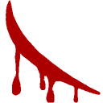
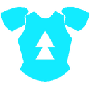
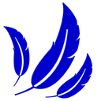

状态效果
Status Effects（状态效果）
Ecliptica 中有 23 种状态效果。有些会造成持续伤害（DOT），有些会限制移动，也有些会提高或降低防御与攻击速度。
| 状态效果 | 描述 |
|---|---|
| Apply Force | 可被 Fistmage: Apply Force 升级消耗。 |
 Bleeding |
每 0.8 秒使你受到 BLEEDING 伤害。 |
| Breached | 玩家：受到 175% 伤害。敌人：受到 125% 伤害。 |
| Burning | 每 0.5 秒使你受到 FIRE 伤害。 |
| Collapse | 每 0.1 秒造成 10% HP 伤害；如果 collapse 计时器超过限制，会不断重新施加。 |
| Dead | 无法行动，但可以复活。复活时会施加 Mortal Curse。 |
| Decayed | 效果持续期间，受到治疗设为 0%。 |
| Empowered | 玩家：额外造成 25% 伤害。敌人：额外造成 50% 伤害。 |
 Enforced |
玩家与敌人受到的伤害都减少 50%。 |
| Frozen | 移动速度设为 25%。辅助技能冷却慢 10 倍。 |
| Frenzied | 攻击速度提高到 150%。 |
 Haste |
移动速度提高到 150%。 |
| Heavy | 跳跃高度变为 0%。 |
| Invincible | 在指定持续时间内免疫伤害。 |
| Mortal Curse | 如果再次死亡，你无法再次复活。可通过 Thaumaturge: Everlife 缓解。 |
| Paralyzed | 该效果激活期间，你完全无法移动。 |
| Poisoned | 每 0.75 秒使你受到 POISON 伤害。 |
| Resilience | 阻挡 1 次伤害，并消耗所有层数。层数越高，持续时间越长。 |
 Revive Protection |
复活后获得 2 到 5 秒伤害保护。 |
| Sticky | 移动速度和跳跃高度设为 25%。 |
| Stop and Go | 在 STOP 与 GO 之间切换。更多信息见 Way of the Law。 |
| Vital | 表示 Healthy Guard 正在生效。 |
| Volatile | 只要你起初不处于 LOW HP，就可以承受一次伤害并保留 1 HP。 |
| Weakened | 玩家：只能造成 25% 伤害。敌人：只能造成 75% 伤害。 |